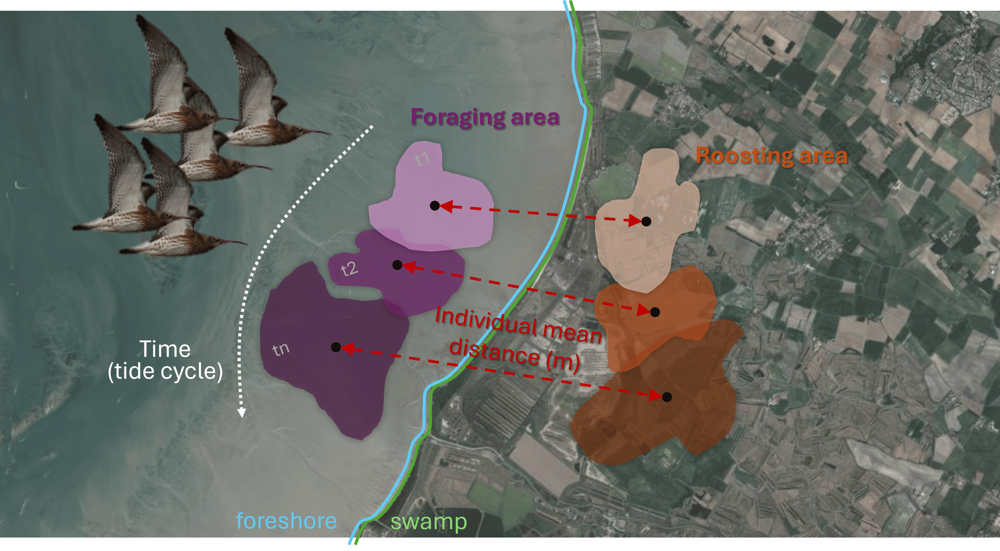

Utilisation de l’espace par le Courlis cendré dans le site fonctionnel de la réserve de Moëze-Oléron
Messages clés
XXX Constituendi autem sunt qui sint in amicitia fines et quasi termini diligendi. De quibus tres video sententias ferri, quarum nullam probo, unam, ut eodem modo erga amicum adfecti simus, quo erga nosmet ipsos, alteram, ut nostra in amicos benevolentia illorum erga nos benevolentiae pariter aequaliterque respondeat, tertiam, ut, quanti quisque se ipse facit, tanti fiat ab amicis.
Alii nullo quaerente vultus severitate adsimulata patrimonia sua in inmensum extollunt, cultorum ut puta feracium multiplicantes annuos fructus, quae a primo ad ultimum solem se abunde iactitant possidere, ignorantes profecto maiores suos, per quos ita magnitudo Romana porrigitur, non divitiis eluxisse sed per bella saevissima, nec opibus nec victu nec indumentorum vilitate gregariis militibus discrepantes opposita cuncta superasse virtute.
Haec ubi latius fama vulgasset missaeque relationes adsiduae Gallum Caesarem permovissent, quoniam magister equitum longius ea tempestate distinebatur, iussus comes orientis Nebridius contractis undique militaribus copiis ad eximendam periculo civitatem amplam et oportunam studio properabat ingenti, quo cognito abscessere latrones nulla re amplius memorabili gesta, dispersique ut solent avia montium petiere celsorum.
Contexte et objectifs scientifiques
Créée en 1985, la Réserve Naturelle Nationale de Moëze-Oléron (RNNMO, Figure 1), située dans le département de la charente maritime, s’étend sur près de 6 800 hectares entre le continent et l’île d’Oléron. Gérée par la Ligue pour la Protection des Oiseaux (LPO-France), elle abrite chaque année jusqu’à 100 000 oiseaux d’eau, dont de nombreux limicoles migrateurs et hivernants.
Située au cœur du bassin fonctionnel des pertuis charentais, la réserve relie estrans, marais et zones conchylicoles, formant un maillon essentiel des grands couloirs migratoires atlantiques (Figure 2) et contribuant à la conservation des oiseaux d’eau à l’échelle internationale.
.jpg)
Depuis 2015, la Ligue pour la Protection des Oiseaux (LPO-France), en collaboration avec les laboratoires LIttoral ENvironnement et Sociétés (LIENSs, UMR 7266, CNRS - Université de La Rochelle) et le Centre d’Écologie et des Sciences de la Conservation (CESCO, UMR 7204, CNRS - MNHN - Sorbonne Université), bague et équipe de GPS des Courlis cendrés au sein de la Réserve Naturelle Nationale de Moëze-Oléron (Figure 3).

L’objectif général de cette étude est de mieux comprendre l’utilisation de l’espace par ces oiseaux dans un site fonctionnel comprenant le bassin de Marennes et le marais de Brouage (Figure 5). Cette recherche s’inscrit dans un contexte de recul du trait de côte, entraînant une maritimisation progressive de la réserve naturelle, et de fortes pressions anthropiques (chasse, pêche à pied, ostréiculture). Il s’agit d’identifier et de proposer des zones prioritaires à préserver pour l’accueil des limicoles.
À partir de l’analyse des données issues de balises GPS posées sur plusieurs dizaines de courlis cendrés dans la réserve, l’objectif principal est de produire un atlas dynamique décrivant l’usage de l’espace par ces oiseaux, en lien avec les activités humaines et les effets de la maritimisation.
Le travail présenté ici propose une cartographie fine de la répartition des courlis dans le site fonctionnel de la réserve de Moëze-Oléron en fonction des fluctuations environnementales et des perturbations anthropiques détectées et mesurables sur la zone.
Cette étude s’inscrit dans le cadre du projet “Adaptation des limicoles aux changements climatiques”, financé par l’Etat (Fonds Vert) et la Région Nouvelle-Aquitaine (Fonds Européen de Développement Régional).
Le courlis cendré

Morphologie : Le Courlis cendré (Numenius arquata) est le plus grand limicole d’Europe. Longueur : 55–65 cm. Envergure : 90–110 cm. Poids : 600–1200 g. Plumage brun-gris tacheté, bec long (jusqu’à 19 cm), courbé vers le bas. Dimorphisme sexuel marqué ; la femelle est généralement plus grande avec un bec plus long.
Comportement général : Espèce discrète, au comportement prudent. Territorial en période de reproduction, grégaire en dehors de celle-ci.
Régime alimentaire : Principalement des vers de terre, insectes, mollusques, crustacés ; complété ponctuellement par des graines et baies. Alimentation au sol ou par sondage dans la vase ou les prairies humides.
Habitats : Reproduction en prairies humides, landes, tourbières, marais, zones agricoles extensives. Alimentation en vasières intertidales, estuaires, prés salés, prairies humides ou pâtures. Repos (hors reproduction) en vasières, zones littorales, lagunes, marais salants.
Saison de reproduction : De Avril à juillet. Nid au sol, souvent dissimulé dans la végétation. Ponte de 3–4 œufs. Incubation ~28 jours. Émancipation des jeunes vers 5–6 semaines.
Migration : Migrateur partiel. Les populations du nord-est de l’Europe hivernent principalement en Europe occidentale et sur les côtes atlantiques africaines. En France, présence à l’année dans certaines régions littorales (ex. : Baie de Somme, estuaire de la Loire), migration marquée en automne et au printemps.
Effectifs de population : La population mondiale est estimée à 140 000 – 240 000 couples reproducteurs, avec ~ 97 000 – 167 000 couples en europe. La population française s’élève à ~ 2 200 à 2 800 couples nicheurs (principalement dans le nord-ouest, Centre-Val de Loire, Grand Est) et ~ 20 000 à 30 000 individus hivernants (surtout sur le littoral atlantique et dans le sud-est).
Tendance démographique et statuts de conservation : Le courlis cendré est en déclin modéré à marqué en Europe occidentale. Il connait un fort recul des effectifs nicheurs en France depuis les années 1980 (perte estimée à plus de 30 %). Il est classé “Near Threatened” (Quasi menacé) à l’échelle mondiale par IUCN. En europe, il est classé à l’Annexe II de la Convention de Berne et l’Annexe II.2 de la Directive Oiseaux (espèce chassable sous conditions), avec un déclin confirmé dans plusieurs États membres. En France, il est considéré comme Vulnérable et est inscrit à l’arrêté ministériel du 26 juin 1987 fixant la liste des espèces de gibier dont la chasse est autorisée mais bénéficiant actuellement d’un moratoire de suspension de la chasse reconduit chaque année. A l’international, il est classé à l’Annexe II de la Convention de Bonn (CMS).
La zone d’étude
L’aire d’étude (voir Figure 5) est un rectangle de 623.5 km² qui s’étend au Nord jusqu’à l’estuaire de la Charente, à l’Est jusqu’à la limite Est de la ville de Rochefort, au Sud jusqu’à l’estuaire de la Seudre, et à l’Ouest jusqu’à la facade Est de l’ile d’Oléron, englobant ainsi zone fonctionnelle du bassin de Marennes, la RNNMO (polygone vert) et le marais de Brouage.
L’aire d’étude est divisée en trois zone A, B et C pour facilité l’analyse spatiale fine.
Les individus sont tous bagués et équipés de GPS au sein de la RNNMO au site de baguage dédié, matérialisé par l’épingle rouge sur les cartes.
Périodes de suivi des individus
Le jeu de données analysé est constitué de XX point GPS enregistré entre 2016 et 2025 pour XX individus. Les données comportent XX femelles, XX mâles, XX adultes et XX juvéniles. L’âge et le sexe n’a pas été identifié pour XX individus.

Temps passé dans la réserve naturelle de Moëze-Oléron
Le pourcentage de temps moyen passé dans la RNNMO par individu est en moyenne de 61%, de 60% pour les comportements de repos uniquement, de 63% pour les comportements d’alimentation uniquement, et de 62% pour les autres comportements.

Domaines vitaux
Chaque individu a un domaine vital spécifique, avec un noyau d’activité représentant les zones de fréquentation la plus intense (50% des points GPS enregistrés), et un domaine vital plus étendu englobant 95 % de la surface d’utilisation (Figure 8).
Les individus ont des domaines vitaux (tous types de comportements confondus) moyen de XXm², avec une zone principale d’activité de XXm² (Figure 12).

La surface du domaine vital des individus ne varie pas en fonction de l’âge ni du sexe des individus.

Les principaux reposoirs
A chaque marée haute, les courlis cendrés remontent hors des vasières et se regoupent dans des zone de repos.

test téléchangement carte png
Reposoirs en fonction de l’age
Le courlis cendré est considéré comme juvénile de sa sortie du nid au 1er septembre de l’année suivant leur éclosion. Au delà de cette période, ils arborent leur plumage mature et sont considéré comme adulte.
Reposoirs en fonction du sexe
Les courlis cendrés femelles et mâles ne présentent pas de différence marquée quant à leur zone de repos.
Reposoirs en fonction du calendrier
Les zones de repos peuvent varier en fonction de la période de l’année et des saisons.
Reposoirs en fonction du mois de l’année
Reposoirs en fonction du jour et de la nuit
Reposoirs entre fonction de la hauteur d’eau
XXX
Les reposoirs peuvent varier en fonction de la hauteur d’eau lors des marées hautes (Figure 31, Figure 32, Figure 33).
Les dates détectées de submersion de la lagune sont : XXX
Les principales zones d’alimentation
A chaque marée base, les courlis cendrés partent à la recherche de nourriture.

Zone d’alimentation en fonction des caractéristiques biologique des individus
Les zones d’alimentation peuvent varier avec l’âge. Les courlis encore juvéniles étant moins expérimentés que les adultes, ils pourraient être assignés à des zones de recherche alimentaire moins favorables.
Zone d’alimentation en fonction de l’age
Zone d’alimentation en fonction du sexe
Les zones d’alimentation varié en fonction des sexe des individus. Les mâles sont resteint à des zones d’eau moins profondes dû à leur bec en moyenne plus court que celui des femelles.
Zone d’alimentation en fonction du calendrier
Zone d’alimentation en fonction du mois de l’année
Les zones d’alimentation peuvent varier en fonction de la période de l’année et des saisons.
Zone d’alimentation en fonction du jour et de la nuit
Utilisation de l’espace lors d’évènements de vent extrêmes
Les évènements climatiques extrèmes sont en augmentation, en fréquence et en intensité, avec le changement climatiques (beniston2004). Les évènements de vents forts sont suspectés d’être préjudiciable pour les courlis cendré et on s’attend à ce que leur utilisation de l’espace soit modifié lors des tempêtes.
L’utilisation de l’espace pour les comportements de repos et d’alimentation pendant les jours avec évènements extrêmes sont comparés aux jours 7 jours avant les évènements extrêmes et considéré comme jours de référence. Les évènements extrèmes sont ici distingué en trois catégories : i) les évènements de vent fort (vitesse de vent supérieur aux 95% des enregistrements), ii) les évènements de vent de Nord-Ouest (avec une orientation du vent entre 270 et 360 degrés) et iii) la combinaison des deux
XXX Les vents de Nord-Ouest semblent ne pas avoir d’effet sur les comportements de repos ni d’alimentation, tout comme les vents forts sur les comportements de repos. Seuls les résultats montrant l’influence des vents forts sur les comportements d’alimentation sont présentés ici. autre variable extrème à ajouter ? roosting aussi XXX
Reposoirs en fonction d’évènements venteux extrèmes
Evènements de vent fort
Evènements de vent de Nord-Ouest
Evènements de vent fort de Nord-Ouest
Zones d’alimentation en fonction d’évènements venteux extrèmes
Evènements de vent fort
Evènements de vent de Nord-Ouest
Evènements de vent fort de Nord-Ouest
Distance entre les reposoirs et les zones d’alimentation
Il y a une corrélation significative (p-value : 6.93e-16 ***) entre la distance individuelle moyenne alimentation-repos et sa variance : les individus qui font le plus loin en moyenne sont aussi ceux qui varient le plus dans la distance parcours à chaque cycle de marais.

Les distances à chaque cycle de marais des paires de centroïds individuels entre les zones d’alimentation et de repos ont été comparées entre les mâles et les femelles, les adultes et les juvéniles, et pendant ou hors péridoe de chasse (Figure 69).

Les juvéniles parcourent significativement plus de distance entre leurs zones d’alimentation et de repos que les adultes. Il n’y a pas de différence significative entre les mâles et les femelles. La distance entre la zone d’alimentation et de repos d’allonge lors de la période de chasse (et plus de variabilité ?).
Fidélité aux espaces au cours des cycles de marée
Afin d’estimer la fidélité à leurs zones, pour le repos, comme pour l’alimentation, des zones d’utilisation principale de l’espace sont estimées en fonction des années ou des mois, puis le chevauchement de ces zones est estimé deux à deux. Un fort chevauchement équivaut à une forte similarité entre les zones au cours du temps, ce qui équivaut à une forte fidélité à leurs zones.
La fidélité inter-annuelle aux espaces a également été estimé. Néanmoins, trop de variabilité inter-individuelle sont ressorties pour pouvoir tirer des conclusions de ces analyses.
Reposoirs

! Alimentation

Evitement des chasseurs et des zones de chasses
Chasse à pied
La chasse à pied est autorisée sur le Domaine Public Maritime (DPM) aux alentours de la RNNMO. Il est attendu que la présence de chasseur et de tir dérange les courlis cendré et que leur utilisation de l’espace pour les comportements de repos et d’alimentation en soient perturbé.
Dans d’ouverture et de fermeture de la chasse sur le DPM :
Afin de limiter les effets de variation saisonnière sur l’utilisation de l’espace, le jeu de données est restreint autour de la fermeture de la chasse : 15 dernier jour de la période de chasse (in), 15 premier jour après la fermeture de la chasse (out).
Les effets de la présence, ou non, de chasseur sur site, et du nombre de chasseur présents ont également été testé, mais aucun effet n’a pu être détecté sur l’utilisation de l’espace pour le repos et l’alimentation.
Chasse à la tonne

La chasse à la tonne, est une méthode de chasse au gibier d’eau pratiquée depuis une installation fixe et semi-enterrée appelée “tonne”. Celle-ci est aménagée à proximité d’un plan d’eau artificiel (mare de tonne) dans le but d’attirer (appelants vivants ou artificiels souvent utilisés) et de tirer les oiseaux migrateurs, principalement les anatidés (canards, oies), souvent de nuit.
En charente-maritime, la période de chasse s’ouverture généralement fin aout, jusqu’à la fin février. Le tir est autorisé de nuit et jusqu’à 1h après le levé du soeil et 1h avant le coucher du soleil du le domaine public maritime. Le tir est interdit de 9h00 à 19h00 sur les territoires situés hors du domaine public maritime et fluvial. La tonne doit être déclarée auprès de la préfecture. Une distance minimale de 300 mètres est imposée entre deux tonnes.
Il est attendu que les tonnes de chasse constitues un dérangement non négligeable pour les oiseaux d’eaux, même lorsqu’il ne sont pas chassé, comme c’est le cas pour le Courlis cendré.
Zones critiques
Les principales zones de repos et d’alimentation estimées précédemment permettent de mettre en évidence des zones d’importance majeure pour les courlis cendrés dans le bassin fonctionnel étudié, mais pourtant en dehors des limites de protection de la RNNMO. Les emplacements des tonnes de chasses sont superposés à ces zones, mettant en evidence les zones de dérangement et de risque majeur pour les oiseaux.
Discussion
Jeu de données et puissance statistique
Bien que ce jeu de données soit exceptionnel de par son nombre d’individus suivis (99 individus) et son échelle temporelle (10 ans), les analyses statistiques effectuées ici manques de puissance pour répondre avec précisions et plus de robustesse aux questions posées.
Notamment, les données sur les chasses (et la pêche) manquent de précisions et d’ampleur temporelles et géographiques.
Ce travail constitue une étape cruciale pour obtenir une image générale des comportements de Courlis cendré dans la région, mais cela ne pourra que bénéficier de plus d’années de suivi et de plus d’individus équipé, en parallèle d’une récolte plus fine, lorsque cela est possible, des données environnementales et des pressions anthropiques.
Protocole de d’échantillonnage des oiseaux équipés
Des contraintes techniques lié à l’écologie de l’espèce et aux autorisations de baguages ont contraint la capture des oiseaux équipés à s’est effectué sur la plage du grand travers, le long de la côte au sein de la réserve de Moëze-Oléron.
Ainsi donc, les oiseaux étudié ici on une utilisation de l’espace orienté autour de cette zone, représentant un biais important dans les analyses.
Il serait particulièrement interessant de poursuivre ce suivi en équipant des oiseaux sur d’autres sites autour de la réserve, notamment sur l’ile d’Oléron pour obtenir une vue globale généralisable à l’ensemble de la population de Courlis dans la région.
Matériels et Méthodes
Nettoyage des données GPS
Le nettoyage des données issues des balises GPS a principalement été effectué à l’aide du package R adehabitat Calenge (2006).
En résumé, les points utilisés pour déterminer les comportements d’alimentation et de repos sont stationnaire (vitesse inférieure ou égale à 0.5 km/h). Pour que chaque individu ait le même poids dans les analyses, un point toutes les 5 min a été estimé pour chaque individus. Uniquement les points situés dans la zone d’étude ont été utilisés. Le temps entre chaque point de localisation sauvegardé par individu pouvant varier et provoquer des périodes de carences de données plus ou moins longues, les périodes où la balise GPS de l’oiseau a enregistré plus d’un point par période de 5 min ont été analysés (éviter d’analyser des positions GPS trop peu précises et de résolutions temporelles hétérogènes). Une limite basse de 100 points estimés par individus sur une période supérieure à 28 jours (de eudx cycles lunaires) a été appliquée pour maintenir une très haute qualité de suivi des individus pour les analyses.
Résumé des méthodes utilisées pour les analyses
Le détail des méthodes est disponible dans le document Readme du projet.
Assignation des comportements
Chaque points GPS enregistrés est associé à un comportement de repos (voir section “Les principaux reposoirs” ici), de recherche alimentaire (voir section “Les principales zones d’alimentation” ici) ou autre.
Comportements de repos : Un point GPS est considéré comme correspondant à du repos si : i) vitesse de déplacement inférieure ou égale à 0.5 Km/h (estimé par partir de la fonction speedfilter du package “adehabitatHR”), ii) entre 2h avant et 2h après une marée haute, iii) au dessus du plus bas niveau d’eau de marée base (au dessus du Lowest Astronomical Tide en anglais) et iv) en dehors de la zone intertidal (déterminée par Litto3D data).
Comportement de recherche alimentaire : Un point GPS est considéré comme correspondant à de la recherche alimentaire si : i) vitesse de déplacement inférieure ou égale à 0.5 Km/h (estimé par partir de la fonction speedfilter du package “adehabitatHR”), et ii) entre 2h avant et 2h après une marée basse.
Identification de l’âge des individus
Voir section “Reposoirs en fonction de l’age” ici et section “Zone d’alimentation en fonction de l’age” ici.
L’âge des individus est déterminé au baguage grâce à leur plumage. Les individus juvéniles lors du baguage et de la pose du GPS deviennent adultes après le 1er septembre de l’année suivante.
Identification du sexe des individus
Voir section “Reposoirs en fonction du sexe” ici et section “Zone d’alimentation en fonction du sexe” ici.
Le sexe des individus est déterminé au baguage par morphométrie, les femelles étant plus grandes que les mâles.
Classification des hauteurs d’eau
Voir section “Zone de repos en fonction de la hauteur d’eau” ici.
Le marégraphe utilisé pour obtenir les hauteurs d’eau (en m) est celui de l’ile d’Aix en priorité. Lorsque les données été manquante pour ce marégraphe, les hauteur d’eau on ét é prédites via une corrélation avec la cotinière et la rochelle. La variable choisi pour la hauteur d’eau est la variable “validé temps différé” en priorité, puis “brute temps différé”, puis “brute haute fréquence”. Les données de hauteurs d’eau ont été téléchargées via le site du SHOM. La hauteur d’eau est moyennée pour chaque période du grain temporelle choisie (5 min).
Basée sur l’expertise de terrain, les marées hautes ont été classées en fonction de la hauteur mesurée ou prédites. La marée est classifiées de marée de mortes eaux si la hauteur d’eau est inférieure à 4.8m, de marée de vives eaux entre 4.8m et 6.4m. Au delà de 6.4m de hauteur d’eau, la marée provoque une submersion de la lagune.
Evènement climatique extremes
Les évènements climatiques extrêmes (ECE) sont définis comme les évènements d’intensité supérieure au quartile 95% des distributions du paramétres météorologiques sur la période 2015-2024 (REF).
Les données météorologiques sont issues du site météostat pour la station météorologique de La Rochelle.
/! autre variable extrème à ajouter ? roosting aussi ? !!!!!!!!!!!
Les paramètres météorologiques étudiés sont la vitesse et l’orientation moyenne journalière du vent.
A partir de ces deux paramètres météorologiques, 3 paramètres météorologiques extrêmes ont été calculés :
- les évènements de vent fort : ECE supérieur à 95%
- les évènements de vent de Nord-Ouest : orientation entre 270 et 360 degrés
- les évènements de vent fort de Nord-Ouest : ECE supérieur à 95% et d’orientation entre 270 et 360 degrés
L’utilisation de l’espace pour les comportements de repos et d’alimentation pendant les jours avec évènements extrêmes detectés sont comparés aux jours 7 jours avant les évènements extrêmes et considéré comme “normaux”.
Les vents de Nord-Ouest semblent ne pas avoir d’effet sur les comportements de repos ni d’alimentation, tout comme les vents forts sur les comportements de repos.
Seuls les résultats montrant l’influence des vents forts sur les comportements d’alimentation sont présentés ici.
Distance entre les zones de repos et d’alimentations
Voir section “Distance entre les reposoirs et les zones d’alimentation”.
La distance entre la zone d’alimentation et de repos a été estimé comme la distance entre les paires de centres géographiques individuels des zones d’alimentation et de repos à chaque cycle de marais (Figure 78).

Analyses spatiales
L’ensemble des analyses statiales sont basées sur des estimations de zones d’utilisation de l’espace dites “distribution d’utilisation”. La distribution d’utilisation (Utilization Distribution, ou “UD”) est une fonction mathématique (une densité de probabilité) qui décrit la probabilité de présence d’un individu dans son environnement en fonction des points GPS qui lui ont été associés (Worton, 1995). Elle permet donc d’estimer les zones les plus fréquemment utilisées par un animal. Les distributions d’utilisation de l’espace ont été estimé par la méthode dite du noyau (kernel), qui consiste à lisser les localisations individuelles afin de produire une carte continue de l’utilisation de l’espace.
Les estimations de distribution d’utilisation de l’espace ont été effectué avec les fonctions kernelUD et getverticeshr du package “adehabitatHR” Calenge (2006).
L’estimation par noyau repose sur un paramètre de lissage (bandwidth, nommé h), ici calculé selon la règle de Silverman, ajustée par un facteur de 1/2 (h/2) pour permettre des analyses à grain plus fin.
Les études sur la zone globale ont été effectuées avec un grain spatial large en grille de 100 m x 100 m. Les études sur les zones réduites A, B et C ont été effectués avec un grain spatial fin en grille de 10 m x 10 m.
Suivant les analyses, le sous jeu de données utilisé pour estimer les distributions d’utilisation de l’espace est différent et restreint à la zone A, B et C, au comportement ciblé (repos ou alimentation), et/ou à la (ou les) variable(s) d’interêt(s) (par exemple avec sexe ou age connus, date de submersion, etc…).
Afin de garantir de représentativité égale à chaque individus étudiés amlgré l’hétérogénéïté dans les quantités de point GPS enregistrés, un échantillonnage aléatoire de point a été effectué à chaque analyse. Pour chaque individus et catégories de variables analysées (comportement, zone, sex, age, etc…), 1000 points sont échantillonné aléatoirement sans remise. La probabilité d’échantillonnage est fonction du temps entre chaque point, plus un point représente une période de temps peu enregistré, plus il aura de probabilité d’être échantillonné. Lorsqu’un individu présente moins de 1000 point pour une combinaison de variable données, tous les disponibles pour cette combinaison sont sélectionnés.
Domaines vitaux
Voir section “Domaines vitaux” ici.
Les domaines vitaux (home range) ont ici été estimés via des fonction de distribution d’utilisation de l’espace (voir précédement) pour chaque individu séparemment. Les calculs ont été réalisés à partir de l’ensemble des points de localisation disponibles pour chaque individu, tous comportements confondus.
Deux niveaux de domaine vital sont définis pour chaque individu : i) le domaine vital étendu qui correspond à l’enveloppe englobant 95 % de la surface d’utilisation, ii) le noyau d’activité correspond à l’enveloppe englobant les principaux 50% de la surface d’utilisation, représente les zones de fréquentation la plus intense.
Temps passé dans la RNNMO
Voir section “Temps passé dans la réserve” ici.
Le temps passé dans la réserve est estimé comme le nombre de point GPS observés dans et hors réserve pour chaque individu. Chaque point représente 5 min de temps.
Données et codes
Toutes les analyses, graphiques et cartes ont été produites à l’aide du logiciel R version XXX et RStudio version XXX.
Les données utilisées sont disponibles ici : XX
L’ensemble des codes produits pour les analyses sont à retrouver ici : Github
Bibliographie
- Bakker, Wiene, et al. (2021) Connecting foraging and roosting areas reveals how food stocks explain shorebird numbers. Estuarine, Coastal and Shelf Science 259 (2021): 107458.
- Beniston, M., & Stephenson, D. B. (2004). Extreme climatic events and their evolution under changing climatic conditions. Global and planetary change, 44(1-4), 1-9.
- Calenge, C., (2006) The package “adehabitat” for the R software: a tool for the analysis of space and habitat use by animals. Ecol. Model. 197 (3), 516–519.
Auteur.ices, affiliations et contributions
Analyses statistiques et spatiales
- Suzanne Bonamour (LPO France)
- Gwenael Quaintenne (LPO France)
Travail de terrain, capture et baguage des oiseaux
- Pierre Rousseau (RNN Moëze-Oléron)
- Loïc Jomat (RNN Moëze-Oléron)
- Adrien Chaigne (RNN Moëze-Oléron)
- Pierrick Bocher (RNN Moëze-Oléron)
- Frédéric Jiguet (RNN Moëze-Oléron)
- et beaucoup d’autre personnes !
Rédaction
- Suzanne Bonamour (LPO France)
Recherche de financements et partenaires
- Adrien Chaigne (RNN Moëze-Oléron)
Comité scientifique
- Pierrick Bocher (Univ. La Rochelle)
- Frédéric Jiguet (MNHN, CESCO, Paris)
- Gwenael Quaintenne (LPO France)
Pour toutes questions, contacter Adrien Chaigne adrien.chaigne@lpo.fr ou Suzanne Bonamour suzanne.bonamour@lpo.fr.